mc-run
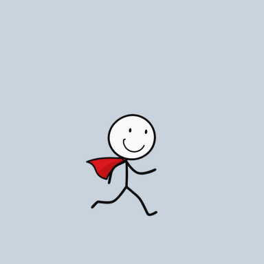
One consecutive stride cycle; removes repeated extension at cycle end. Leg ordering still does not convincingly alternate: redraw/regenerate recommended.
RGBA sheet · MetadataShorter gestures, stable airborne holds, and consecutive transition frames. Preview animations repeat; one-shot playback intent is recorded in JSON. Provisional clips still need drawing fixes.

One consecutive stride cycle; removes repeated extension at cycle end. Leg ordering still does not convincingly alternate: redraw/regenerate recommended.
RGBA sheet · MetadataShort restrained section, ping-pong cape turnaround. Excludes later foot-lift and shortened-leg artifacts.
RGBA sheet · Metadata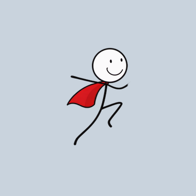
Use a readable raised-knee pose. Removes unnecessary limb/cape changes while game supplies upward movement.
RGBA sheet · Metadata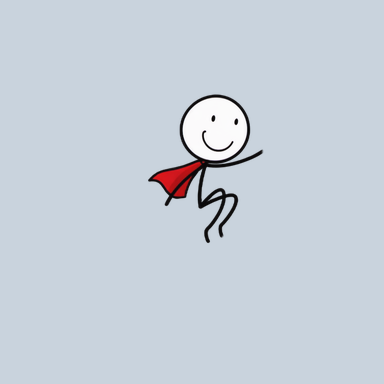
One intact bent-knee pose; excludes flickering foot tips. Tuck is still loose.
RGBA sheet · Metadata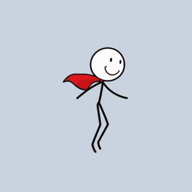
One feet-down pose; removes cycling knees and changing arm positions.
RGBA sheet · Metadata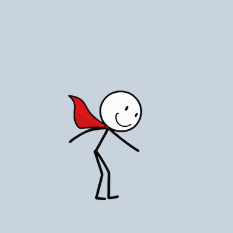
Retain consecutive compression and recovery; cut six-frame squat pause. End before unrelated running. Pose bridge 10→16 remains a cut; proportions differ from run.
RGBA sheet · Metadata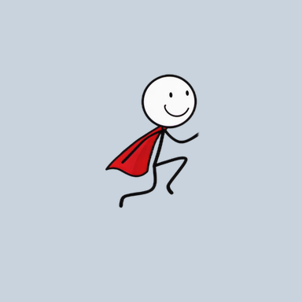
Keep consecutive takeoff lean; end before cape collapses into a thin line. No repeated flight hold.
RGBA sheet · Metadata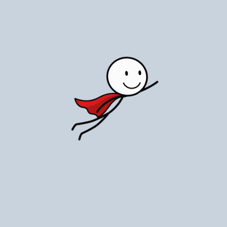
Small cape-only-looking subsection with rear arm staying against cape; reverse at endpoint. Excludes dangling-arm swings.
RGBA sheet · Metadata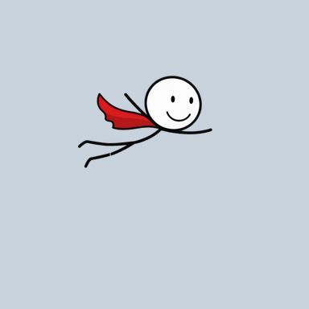
Restore consecutive recovery frames instead of skipping across poses. Brief arm/torso overlap remains at 19–22; proportion mismatch persists.
RGBA sheet · Metadata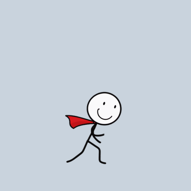
Keep extension and recovery in sequence; shorten extended-arm hold. Cut 17→23 joins similar extension poses. Generated torso/leg deformation remains.
RGBA sheet · Metadata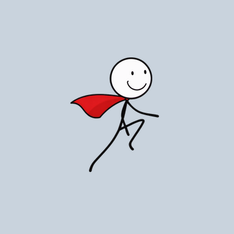
Remove tangled windup and recovery. Keep extension and initial recoil, excluding empty20–21. Short effect-ready gesture, not complete return to ready pose.
RGBA sheet · Metadata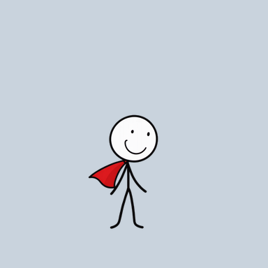
Restore consecutive recoil; cut long surprise hold. Join16→29 retains same broad pose but face/cape differ. Front-facing recoil remains.
RGBA sheet · Metadata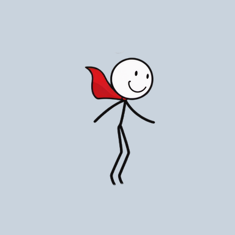
Feet-leading hold removes bob and knee cycling. Game supplies downward travel.
RGBA sheet · Metadata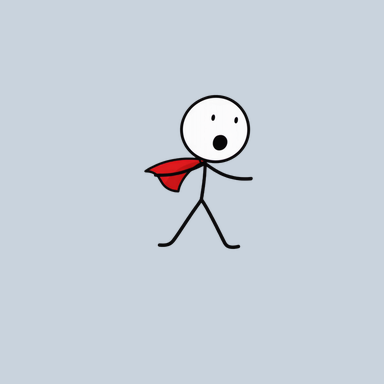
Keep only intact surprised splay; let separate crash effect cover exit. Removes malformed mouth12, empty24–25, and unrelated recovery.
RGBA sheet · Metadata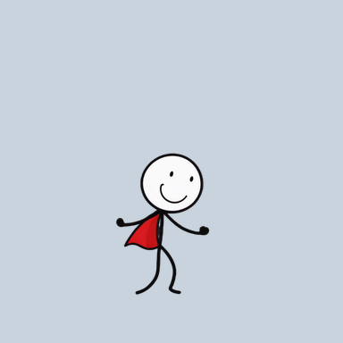
One consecutive arm raise ending in hold, instead of repeated waving. Generated enlarged fist ends remain.
RGBA sheet · Metadata